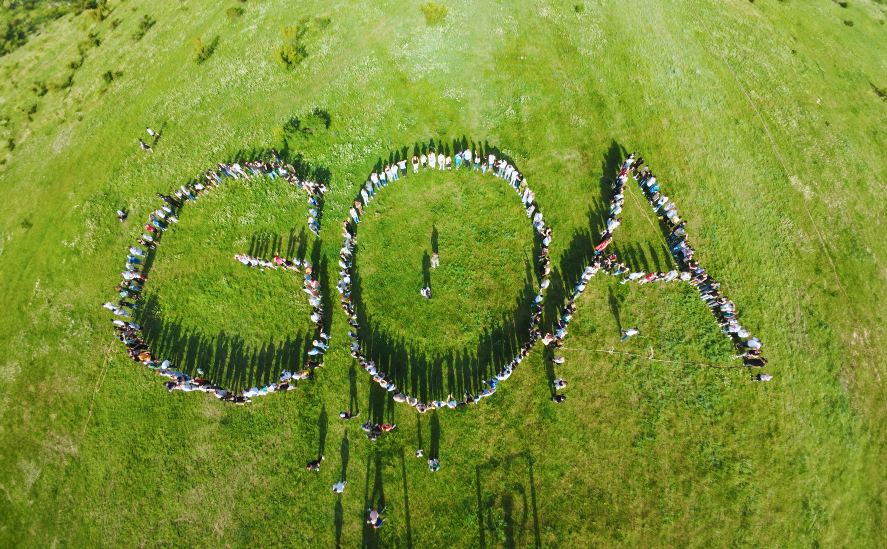
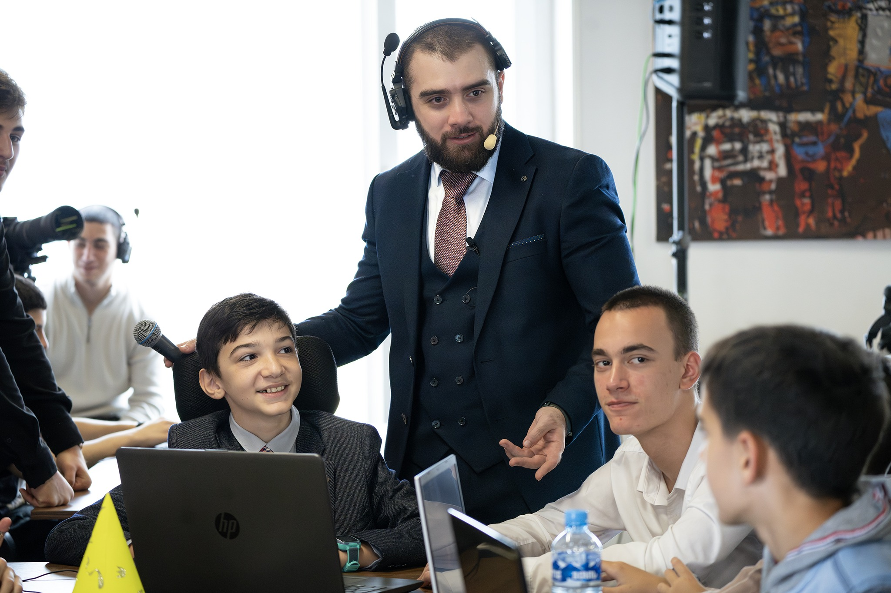

გოაში პროგრამირებას ძალიან დიდი ყურადღება ექცევა>, რადგან ტექნოლოგიური სფერო აქ სწრაფად ვითარდება. აკადემიები, ტრენინგ ცენტრები და ჰაკათონები, რომლებიც პროგრამირებას უკავშირდება, სტუდენტებს და პროფესიონალებს საშუალებას აძლევს, არა მხოლოდ თეორიული ცოდნა მიიღონ, არამედ პრაქტიკულად გამოიყენონ ის.
რატომ არის გოა საინტერესო პროგრამირების სწავლებისთვის?
თანამედროვე ტექნოლოგიები
გოაში სწავლების პროცესში ხშირად იყენებენ თანამედროვე პროგრამირების ენებს და ინსტრუმენტებს, როგორიცაა
Python – მონაცემთა ანალიზი და მანქანური სწავლა.
JavaScript, – ვებ დეველოპმენტისთვის.
Java – აპლიკაციებისთვის და სისტემური პროგრამებისთვის.
C++ – მაღალი წარმადობის პროგრამებისთვის.

გოა ცნობილია თავისი მზარდი სტარტაპ ეკოსისტემით, სადაც ახალგაზრდებს შეუძლიათ შეუერთდნენ ინოვაციურ პროექტებს. აქ ხშირად ხდება სტარტაპებისთვის პროგრამისტების დასაქმება.
Hackaton
გოაში Hackaton ძალიან პოპულარულია. ეს არის ღონისძიება, სადაც პროგრამისტები გუნდურად ერთმანეტს ეჯიბრებიან, რათა მოკლე დროში შექმნან ახალი პროგრამები, აპლიკაციები ან სისტემები.
ტრენინგ ცენტრები და კურსები
გოაში შეგიძლიათ მიიღოთ კოდინგის პროფესიონალური ტრენინგი, როგორიცაა
ვებ დეველოპმენტი (HTML, CSS, JavaScript).
მონაცემთა მეცნიერება და ხელოვნური ინტელექტი.
მობილური აპლიკაციების განვითარება (Flutter, React Native).
ყურადღება ექცევა პრობლემების გადაჭრის უნარების განვითარებას.
ბავშვები მონაწილეობენ რეალურ პროექტებში.
აქცენტი კეთდება გუნდურ მუშაობაზე, რაც დღეს პროგრამირების სამყაროში ძალიან მნიშვნელოვანია.
პროგრამირების სწავლა გეხმარება
ლოგიკური აზროვნების განვითარებაში.
სირთულეების გადაჭრაში.
გლობალურ კომპანიებთან დაკავშირებაში, რადგან პროგრამირება უნივერსალური ენაა.

გოაში პროგრამირების სწავლა ნამდვილად ღირებულია, რადგან აქ შეგიძლიათ შრომისმოყვარეობის საშუალებით წარმატებას მიაღწიოთ